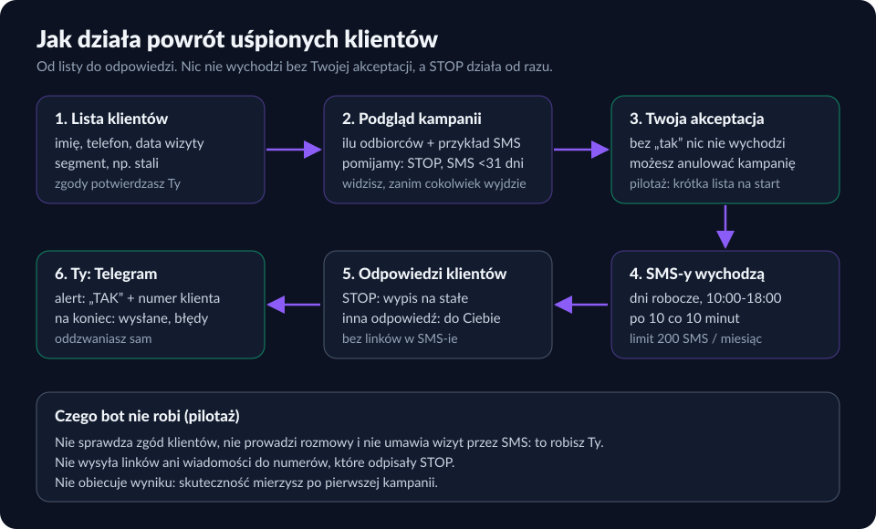
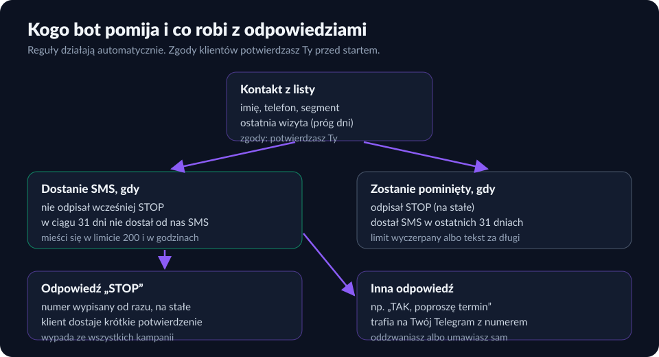

Powrót uśpionych klientów: SMS, który przypomina o Twojej firmie
Masz listę klientów, którzy kiedyś u Ciebie byli, a od dawna się nie pojawiają. Bot KREATO wysyła im krótkie, uprzejme SMS-y, zbiera odpowiedzi i przekazuje je Tobie na Telegram. Nic nie wychodzi bez Twojej akceptacji, a wypisanie się jednym słowem działa od razu.
Co robi bot
- Przyjmuje listę klientów: imię, telefon, data ostatniej wizyty i opcjonalnie segment (np. „stali”, „okazjonalni”). Błędne numery odrzuca, duplikaty łączy.
- Układa kampanię: wybierasz segment i próg („nie byli od 180 dni”), a z szablonu powstają gotowe wiadomości z imieniem klienta i nazwą Twojej firmy.
- Pokazuje podgląd przed wysyłką: ilu odbiorców, przykładowy SMS, ilu pominięto (wypisani, już niedawno kontaktowani, za długie wiadomości).
- Wysyła po Twojej akceptacji: w dni robocze, w ustalonych godzinach, małymi paczkami.
- Obsługuje odpowiedzi: STOP wypisuje numer, a pozostałe odpowiedzi (np. „TAK, poproszę termin”) trafiają do Ciebie na Telegram.
- Podsumowuje kampanię: ile wysłano, ile było błędów, ile pominięto i ile kosztowała wysyłka.
Jak to wygląda na obrazkach


Przykładowe szablony wiadomości
| Branża | Przykładowy szablon (skrót, 131 znaków lub mniej) |
|---|---|
| Gabinet stomatologiczny | „Dzien dobry Anna, dawno Cie nie widzielismy w Gabinet Nowak. Umow kontrole: zadzwon lub odpisz TAK. Aby sie wypisac, odpisz STOP.” |
| Salon beauty | „Czesc Marta! Minelo troche czasu od ostatniej wizyty w Salon Lilia. Chcesz umowic termin? Odpisz TAK. Aby sie wypisac, odpisz STOP.” |
| Warsztat samochodowy | „Dzien dobry, w Warsztat Kowal mija rok od ostatniego przegladu auta. Umowic termin? Odpisz TAK. Aby sie wypisac, odpisz STOP.” |
To szablony ilustracyjne z wymyślonymi nazwami firm, a nie wiadomości do prawdziwych klientów. Każda wiadomość mieści się w jednym SMS-ie, nie zawiera linków i kończy się informacją o wypisaniu.
Jak to jest zabezpieczone
- Zgoda: SMS z zaproszeniem do powrotu to marketing bezpośredni, który wymaga uprzedniej zgody odbiorcy (art. 398 Prawa komunikacji elektronicznej). Przed pierwszą kampanią prosimy o Twoje potwierdzenie, że masz zgody; bez niego nie uruchamiamy wysyłki.
- Akceptacja: kampania zaczyna jako szkic z podglądem. Wysyłka rusza dopiero po Twoim „zatwierdzam”; do tego momentu możesz ją anulować.
- STOP na stałe: numer, który odpisał STOP, wypada ze wszystkich kolejnych kampanii.
- Jeden SMS na numer w 31 dni, nawet gdy ktoś jest na dwóch listach.
- Godziny i tempo: dni robocze, domyślnie 10:00–18:00, po 10 wiadomości co 10 minut.
- Limit miesięczny 200 SMS. Po jego wyczerpaniu wysyłka zatrzymuje się, a reszta jest oznaczona w podsumowaniu.
Cennik (ceny netto za miesiąc)
| Pilotaż: powrót uśpionych klientów | |
|---|---|
| Cena miesięczna | 199 zł |
| Plan roczny (płacisz za 10 miesięcy, korzystasz 12) | 165 zł miesięcznie (1 990 zł za rok) |
| Limit wiadomości | 200 SMS w miesiącu |
| W cenie | podgląd i akceptacja kampanii, obsługa STOP, odpowiedzi na Telegram, podsumowanie kampanii |
Ceny netto. Domyślnie wystawiamy rachunek bez VAT; na życzenie faktura z VAT przez platformę Useme. Usługa startuje jako pilotaż: zaczynamy od krótkiej listy i sprawdzamy odbiór wiadomości, zanim zwiększymy skalę.
Czego bot nie robi
- Nie sprawdza za Ciebie, czy masz zgody klientów.
- Nie prowadzi rozmowy z klientem i nie umawia wizyt przez SMS: odpowiedź trafia do Ciebie, a decyzję podejmuje człowiek.
- Nie wysyła wiadomości z linkami ani do numerów, które odpisały STOP.
- Nie obiecuje konkretnego wyniku kampanii.
Jak wygląda wdrożenie
- Przysyłasz listę klientów (plik lub eksport z Twojego programu) i potwierdzasz, że masz zgody na wiadomości marketingowe.
- Razem ustalamy próg, segmenty i szablon wiadomości (jak ułożyć SMS, który nie wygląda jak spam).
- Dostajesz podgląd kampanii i zatwierdzasz ją albo prosisz o zmiany.
- Wiadomości wychodzą w dni robocze, a odpowiedzi czekają na Twoim Telegramie.
Najczęstsze pytania
Czy mogę wysłać SMS do wszystkich byłych klientów?
Tylko do tych, którzy wyrazili zgodę na wiadomości marketingowe (art. 398 Prawa komunikacji elektronicznej) i jej nie wycofali. Zgody potwierdzasz Ty: nie sprawdzamy ich za Ciebie, a bez Twojego potwierdzenia nie uruchamiamy kampanii. To nie jest porada prawna; w razie wątpliwości skonsultuj zakres zgód z prawnikiem.
Co się dzieje, gdy klient odpisze STOP?
Numer od razu trafia na listę wykluczeń i nie dostanie kolejnych wiadomości z naszych kampanii tego typu. Oczekujące wiadomości do tego numeru są anulowane, a klient dostaje krótkie potwierdzenie wypisu. Samo „NIE” nie jest traktowane jako wypis, bo bywa odpowiedzią na inne wiadomości.
Co jeśli klient odpisze, że chce wizytę?
Odpowiedź trafia od razu na Twój Telegram razem z numerem telefonu i treścią. Bot nie prowadzi rozmowy ani nie umawia wizyty przez SMS: oddzwaniasz albo umawiasz termin sam.
Z jakiego numeru wychodzą SMS-y?
Obecnie z numeru KREATO +48 459 567 844, a nazwa Twojej firmy jest w treści wiadomości. Własna nazwa nadawcy nie jest na ten moment dostępna. Odpowiedzi klientów wracają na ten numer i trafiają do Ciebie.
Ile to kosztuje i co po wyczerpaniu limitu?
199 zł netto miesięcznie z limitem 200 SMS w miesiącu. W planie rocznym płacisz za 10 miesięcy, a korzystasz 12: 165 zł miesięcznie. Po wyczerpaniu limitu wysyłka zatrzymuje się, a niewysłane wiadomości widać w podsumowaniu kampanii; wyższy limit uzgadniamy indywidualnie przed startem. Ceny netto; domyślnie wystawiamy rachunek bez VAT, na życzenie fakturę z VAT przez platformę Useme.
Czy mogę najpierw zobaczyć, jak to działa?
Tak. Napisz na biuro@kreato.tech: pokażemy podgląd kampanii na przykładowej firmie demonstracyjnej, a pilotaż zaczniemy od krótkiej listy, żeby sprawdzić odbiór wiadomości.
Zobacz też: Uśpieni klienci: jak wrócić do nich SMS-em i nie wyglądać jak spam (artykuł) · Przypomnienia o nieopłaconych fakturach SMS · FAQ: powrót uśpionych klientów · Jak działają nasze boty (schematy) · RODO i AI — lista kontrolna
Chcesz zobaczyć podgląd kampanii dla swojej firmy?
Napisz do nas — odpiszemy e-mailem i pokażemy demonstrację.
biuro@kreato.tech